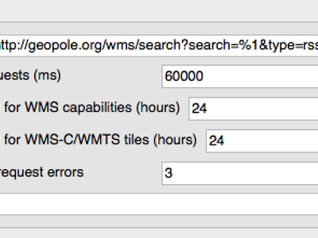
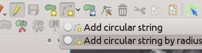
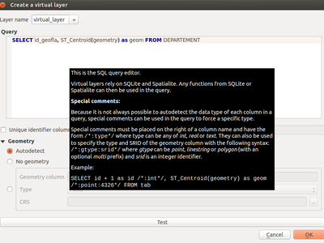
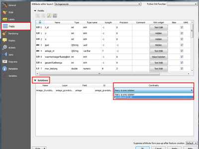
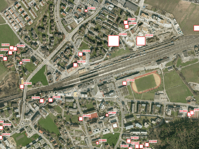
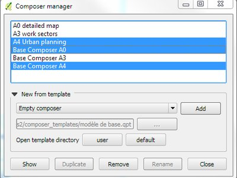
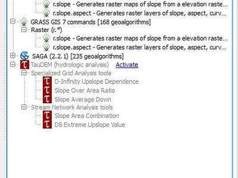

Log met wijzigingen voor QGIS 2.14¶

Dit is het log met wijzigingen voor de volgende uitgave van QGIS - versie 2.14 ‘Essen’. Essen was gastheer voor onze ontmoetingen van de ontwikkelaars in oktober 2012 en 2014.
Long Term Release
Dit is een speciale uitgave omdat het is aangewezen als een ‘LTR’ (Long Term Release). LTR-uitgaven zullen worden ondersteund met achterwaarts ondersteunende probleemoplossingen voor één jaar, en zullen een permanente bevriezingsfase hebben (d.i. er zullen geen nieuwe mogelijkheden worden toegevoegd, alleen probleemoplossingen en kleinere updates). Onthoud dat we er over discussiëren om de termijn van onze LTR-uitgaven te verlengen tot twee jaar, maar om technische redenen zullen we dat niet doen tot QGIS 3.2.
Het doel van LTR-uitgaven is om een stabiel en minder vaak wijzigend platform te verschaffen voor bedrijven en organisaties die zich niet meer dan eenmaal per jaar willen bezighouden met het bijscholen van gebruikers, trainingsmateriaal etc. Het succes van de LTR hangt heel veel van u, onze geliefde gebruikers, af, we hebben uw ondersteuning nodig om ons probleemoplossingen aan te reiken en er voor zorgend dat u in uw ondersteuningscontracten met verleners van ondersteuning specificeert dat probleemoplossingen die voor u worden toegepast ook worden toegepast op de tak van de LTR als ook op onze normale takken voor ontwikkeling.
Als een LTR belangrijk voor u is, overweeg dan ook directe ondersteuning voor het project QGIS, of moedig uw zakelijke dienstverlener aan om de LTR als basis te gebruiken voor uw zakelijke oplossing zodat iedereen kan profiteren van een stabiel platform dat doorlopend wordt verbeterd en verfijnd. Onthoud dat voor gebruikers en organisaties die graag de grenzen verkennen, onze viermaandelijkse uitgaven ongewijzigd door blijven gaan.
Nieuwe mogelijkheden in QGIS 2.14 ‘Essen’
Als u upgradet vanaf QGIS 2.8 (onze eerdere LTR-versie) zult u vele nieuwe mogelijkheden aantreffen in deze uitgave. We bevelen u aan om de logs voor de wijzigingen van de tussenliggende niet-LTR uitgaven 2.10 en 2.12 te lezen omdat deze QGIS 2.14 ook alle mogelijkheden bevat die zijn gepubliceerd voor die uitgaven. Onthoud dat 2.14 eerst de gewone opslagplaatsen voor pakketten zal bereiken en niet onmiddellijk 2.8 zal vervangen in de opslagplaatsen voor de LTR-pakketten. Dat zal gebeuren als 2.16 wordt uitgegeven.
Wanneer aan software nieuwe mogelijkheden worden toegevoegd introduceren die de mogelijkheid tot het ontstaan van nieuwe problemen - als u in deze uitgave nieuwe problemen tegenkomt, vul dan een ticket in op de QGIS Bug Tracker.
Dankwoord
We would like to thank the developers, documenters, testers and all the many folks out there who volunteer their time and effort (or fund people to do so). From the QGIS community we hope you enjoy this release! If you wish to donate time, money or otherwise get involved in making QGIS more awesome, please wander along to qgis.org and lend a hand!
QGIS is supported by donors and sponsors. A current list of donors who have made financial contributions large and small to the project can be seen on our donors list. If you would like to become an official project sponsor, please visit our sponsorship page for details. Sponsoring QGIS helps us to fund our six-monthly developer meetings, maintain project infrastructure and fund bug fixing efforts. A complete list of current sponsors is provided below - our very great thank you to all of our sponsors!
QGIS is gratis software en u bent niet verplicht om maar iets te betalen voor het gebruiken ervan - in feite willen we mensen, wijd en zijd verspreid, aanmoedigen om het te gebruiken ongeacht uw financiële of sociale status - wij geloven dat het uitrusten van mensen met gereedschappen voor het maken van ruimtelijke beslissingen zal resulteren in een betere wereld voor de gehele mensheid. Als u in staat bent QGIS te ondersteunen, kunt u 
- Huidige sponsoren van QGIS
- Algemeen
- Mogelijkheid: Gedrag gewijzigd voor functie strpos
- Mogelijkheid: Zoomen naar object met klik met rechts in attributentabel
- Mogelijkheid: Verbeteringen voor snelheid en geheugen
- Mogelijkheid: Meer variabelen in expressies
- Mogelijkheid: Meer controle over plaatsing van kaartelementen
- Feature: Programma voor oplossen van problemen tegen betaling
- Mogelijkheid: Veldberekening kan worden gebruikt om geometrie van object bij te werken
- Mogelijkheid: Nieuwe functies voor expressies in 2.14
- Analyse-gereedschappen
- Browser
- Gegevensproviders
- Feature: Cache mogelijkheden voor WMS
- Mogelijkheid: Ondersteuning voor gebogen geometrie uitgebreid
- Mogelijkheid: Verbeterde afhandeling van velden time en datetime
- Mogelijkheid: Ondersteuning voor Z/M in provider Tekengescheiden tekst
- Mogelijkheid: Transactiegroepen voor bewerken van Postgres
- Mogelijkheid: PKI-authenticatie voor provider Postgres
- Mogelijkheid: Virtuele lagen
- Mogelijkheid: Meer bestandsextensies voor bestandsselectie voor providers GDAL en OGR
- Mogelijkheid: ST_RemoveRepeatedPoints gebruiken voor server-side vereenvoudiging met lagen voor PostGIS 2.2 (of nieuwer)
- Gegevensbeheer
- Mogelijkheid: Plug-in SPIT verwijderd
- Mogelijkheid: Exporteren als DXF: optie om titel te gebruiken in plaats van de naam als laagnaam voor DXF in toepassing en server
- Mogelijkheid: Type geometrie kan worden overschreven in het dialoogvenster Vector opslaan als
- Mogelijkheid: Vectorsamenvoegingen worden nu opgeslagen in QLR laagdefinitie bestanden
- Mogelijkheid: Widget Externe bron
- Mogelijkheid: Bewerken relatie N:M
- Digitaliseren
- Labels
- Legenda van laag
- Printvormgeving
- Plug-ins
- Processing
- Mogelijkheid: Nieuwe algoritmes in 2.14
- Mogelijkheid: Q/A eenheidstesten
- Mogelijkheid: Verbeterde Toolbox
- Mogelijkheid: Batchprocessen kunnen worden opgeslagen en later worden opgehaald met de interface voor Batchprocessing
- Mogelijkheid: Meer informatief dialoogvenster voor algoritmes
- Mogelijkheid: modules v.net voor GRASS7
- Programmeerbaarheid
- Mogelijkheid: Functiebewerker voor expressie opnieuw ontworpen
- Mogelijkheid: Init-code voor Python opslaan in het project
- Mogelijkheid: Nieuwe opties filteren en sorteren voor QgsFeatureRequest
- Mogelijkheid: Opties voor aangepast objectformulier voor code van Python
- Mogelijkheid: Nieuwe klassen voor PyQGIS in 2.14
- Nieuwe bronklassen
- Nieuwe klassen voor GUI
- QGIS Server
- Mogelijkheid: parameter STARTINDEX in WFS GetFeature Request
- Mogelijkheid: showFeatureCount in GetLegendGraphic
- Mogelijkheid: Optie om het renderen van onregelmatigheden aan de randen van tegels te vermijden
- Mogelijkheid: Controle van configuratie in projecteigenschappen
- Mogelijkheid: mogelijkheden voor WMS INSPIRE
- Mogelijkheid: Verkorte namen toevoegen aan lagen, groepen en project
- Symbologie
- Mogelijkheid: Assistent Grootte voor variëren van de breedte van de lijn
- Mogelijkheid: Ondersteuning voor transparantie in parameters voor SVG-kleuren
- Mogelijkheid: Gemakkelijk dupliceren van symboollagen
- Mogelijkheid: Renderer 2.5D
- Mogelijkheid: Toestaan van definitie van volgorde voor renderen voor objecten
- Mogelijkheden: Symbolen voor geometrie-generator
- Voorbeelden
- Gebruikers-interface
- Mogelijkheid: Attributentabel kan worden vernieuwd
- Mogelijkheid: Direct instellen kleuren renderer en klassesymbool uit contextmenu in legenda
- Mogelijkheid: Symbolen voor de legenda direct bewerken vanuit de boom met lagen
- Mogelijkheid: Alle items voor de legenda weergeven/verbergen via het contextmenu
Huidige sponsoren van QGIS¶
  Office of Public Works, Ireland, Ierland (12.2014-12.2015) Office of Public Works, Ireland, Ierland (12.2014-12.2015) |
 GAIA. mbH, Duitsland (11.2015-11.2016) GAIA. mbH, Duitsland (11.2015-11.2016) |
 Sourcepole AG, Zwitserland (10.2014-10.2016) Sourcepole AG, Zwitserland (10.2014-10.2016) |
| AGH University of Science and Technology, Polen (06.2015-06.2016) |
 Staat Vorarlberg, Oostenrijk (03.2013-05.2016) Staat Vorarlberg, Oostenrijk (03.2013-05.2016) |
|
Asociación Geoinnova, Spanje (03.2016-03-2017) |
Gis3W, Italië (01.2014-01.2017) |
GKG Kassel,(Dr.-Ing. Claas Leiner), Duitsland (03.2014-03.2017) |
CawdorForestry Resource Management, Schotland (02.2016-02.2017) |
ChameleonJohn, USA (02.2016-02.2017) |
2D3D.GIS, Frankrijk (12.2015-12.2016) |
Dr. Kerth + Lampe Geo-Infometric GmbH, Duitsland (12.2015-12.2016) |
MappingGIS, Spanje (11.2015-11.2016) |
HostingFacts.com, Estland (12.2015-12.2016) |
Urbsol, Australië (11.2014-11.2016) |
Lutra Consulting, VK (10.2015-10.2016) |
WhereGroup GmbH & Co. KG, Duitsland (08.2015-08.2016) |
Nicholas Pearson Associates, VK (07.2015-07.2016) |
QGIS Polska, Polen (07.2015-07.2016) |
www.terrelogiche.com, Italië (06.2015-06.2016) |
www.geosynergy.com.au, Australië (05.2012-05.2013+06.2015-06-2016) |
Gaia3D, Inc., Zuid Korea (05.2015-05.2016) |
Royal Borough of Windsor and Maidenhead, VK (04.2015-04.2016) |
Chartwell Consultants Ltd., Canada (03.2015-03.2016) |
Trage Wegen vzw, België (03.2015-03.2016) |
GFI - Gesellschaft für Informationstechnologie mbH, Duitsland (03.2015-03.2016) |
GIS-Support, Polen (02.2015-02.2016) |
ADLARES GmbH, Duitsland (01.2015-01.2016) |
www.molitec.it, Italië (01.2014-01.2016) |
www.argusoft.de, Duitsland (06.2012-06.2013 + 12.2013-12.2015) |
Customer Analytics, USA (12.2014-12.2015) |


Algemeen¶
Mogelijkheid: Gedrag gewijzigd voor functie strpos¶
Het gedrag van de functie strpos is gewijzigd, zodat geen overeenkomst nu resulteert in een waarde “0” en een waarde niet-nul betekent een overeenkomst op de gespecificeerde tekenpositie. In oudere versies van QGIS zou een waarde van “-1” geen overeenkomst betekenen en andere teruggegeven waarden zouden de tekenpositie -1 vertegenwoordigen.
Projectbestanden uit eerdere versies van QGIS zullen moeten worden bijgewerkt om deze wijziging te kunnen laten zien.

Deze mogelijkheid werd ontwikkeld door Jürgen Fischer
Mogelijkheid: Zoomen naar object met klik met rechts in attributentabel¶
U kunt nu naar een object zoomen vanuit de attributentabel (zonder het eerst te moeten selecteren) door met rechts te klikken en te selecteren Naar object inzoomen.

Mogelijkheid: Verbeteringen voor snelheid en geheugen¶
- Een set geselecteerde objecten opslaan uit een grote laag is nu veel sneller
- Alleen geselecteerde objecten bijwerken met behulp van het veldberekening is sneller
- Sneller zoomen naar geselecteerde in grote lagen
- Veel snellere functie
get_featurevoor een expressie (speciaal wanneer een geïndexeerde kolom in de laag waarnaar verwezen wordt wordt gebruikt) - Algoritmes voor Processing
SelectByAttributeenExtractByAttributezijn vele malen sneller, en kunnen voordeel halen uit indices voor databases die zijn gemaakt voor een attribuut - Algoritme voor Processing
PointsInPolygonis vele malen sneller - De categorieën in een renderer Categorieën filteren (bijv. alleen enkele categorieën weergeven en andere niet selecteren) is veel sneller, omdat nu alleen de overeenkomende objecten worden opgehaald van de gegevensprovider
- Significante reductie in het geheugen vereist voor het openen van grote vectorlagen
Mogelijkheid: Meer variabelen in expressies¶
Tijdens renderen zullen nieuwe variabelen beschikbaar zijn:
@geometry_part_count: De telling van het deel van de momenteel gerenderde geometrie (van belang voor meerdelige objecten)@geometry_part_num: 1-gebaseerde index van het momenteel gerenderde deel van de geometrie
Deze zijn nuttig om verschillende stijlen toe te passen op verschillende delen van meerdelige objecten:
@map_extent_width: De breedte van de momenteel gerenderde kaart in kaarteenheden@map_extent_height: De hoogte van de momenteel gerenderde kaart in kaarteenheden@map_extent_center: Het middelpunt van de momenteel gerenderde kaart in kaarteenheden
Variabelen die een relatie hebben met de omgeving van het besturingssysteem zijn ook toegevoegd:
@qgis_os_name: bijv. ‘Linux’, ‘Windows’ of ‘OSX’@qgis_platform: bijv. ‘Desktop’ of ‘Server’@user_account_name: accountnaam van gebruiker voor huidige besturingssysteem@user_full_name: gebruikersnaam van huidige gebruiker voor account van besturingssysteem (indien beschikbaar).

deze mogelijkheid werd mogelijk gemaakt door Andreas Neumann (de OS- en gebruikergerelateerde variabelen)
Deze mogelijkheid werd ontwikkeld door Nyall Dawson, Matthias Kuhn
Mogelijkheid: Meer controle over plaatsing van kaartelementen¶
QGIS 2.14 heeft een betere controle verkregen voor het plaatsen van Noordpijlen, schaalbalken en opmerkingen voor auteursrecht in het hoofdkaartvenster. U kunt nu precies de positie van deze elementen instellen met behulp van een variëteit aan eenheden (inclusief millimeters, pixels en percentage).

Feature: Programma voor oplossen van problemen tegen betaling¶
Voorafgaande aan elke uitgave houden we een programma voor het oplossen van problemen tegen betaling waar we ontwikkelaars de fondsen verstrekken om zoveel mogelijk problemen op te lossen. We hebben besloten om een verantwoording van dit programma voor het oplossen van problemen tegen betaling op te nemen als deel van ons log van wijzigingen. Onthoud dat deze lijst niet uitputtend is.
- Sandro Santilli: Postgis Connection freeze if you press “Set filter” during loading of data
- Sandro Santilli: db_manager is unable to load rasters from connections with no dbname specified
- Sandro Santilli: Plugin layers do not work correctly with rotation
- Sandro Santilli: Crash in QgsGeomColumnTypeThread stopping connection scan #14140 #13806
- Sandro Santilli: Crash after bulk change of attribute value in shapefile
- Sandro Santilli: KMZ causes QGIS application crash (Mac)
- Sandro Santilli: QGIS 2.8.1 crash opening FileGDB (openGDB-Driver)
- Sandro Santilli: QGIS crashes when removing vertex of a multipart geometry
- Sandro Santilli: test -V -R qgis_analyzertest segfaults
- Sandro Santilli: output/bin/qgis_diagramtest segfaults
- Sandro Santilli: Overflow on primary key with negative values; crashes QGIS when editing #13958 #14262
- Sandro Santilli: PyQgsPostgresProvider test hangs in absence of test database
- Sandro Santilli: TestVectorLayerJoinBuffer hangs if database is not available
- Nyall Dawson: BLOCKER: Crash when opening layer properties dialog for geometryless vector layer
- Nyall Dawson: Broken server side filtering for OGR, Oracle and Spatialite layers
- Nyall Dawson: BLOCKER: Bad polygon digitizing in master
- Nyall Dawson: BLOCKER: Heatmap with expression triggers segfault
- Nyall Dawson: BLOCKER: unchecking one sub-layer of a categorized symbology leads to no features being drawn
- Nyall Dawson: HIGH: A Multiband image(e.g. landsat5,7,8) cannot be displayed in windows8
- Nyall Dawson: BLOCKER: CurvePolygons not drawn
- Nyall Dawson: BLOCKER: “Merge Attributes” tool doesn’t change values when they are typed
- Nyall Dawson: HIGH: Filter legend by content is broken when renderer contains duplicate symbols
- Nyall Dawson: Fix issues with conversion of renderers to rule based renderer resulting in broken renderer
- Nyall Dawson: Fix categorised renderer does not store changes to the source symbol
- Nyall Dawson: HIGH: Avoid crash with raster calculator and huge raster inputs
- Nyall Dawson: HIGH: @value variable of simple symbol fill color wrongly gets modified in data-defined expression
- Nyall Dawson: HIGH: Editing Composer legend while filtered does not work
- Nyall Dawson: NORMAL: Deleting nodes - inconsistent behaviour
- Nyall Dawson: Fix handling of time value in attributes
- Nyall Dawson: Dialog tab order fixes
- Nyall Dawson: BLOCKER: crash when adding multiple files from browser panel
- Nyall Dawson: HIGH: Merge selected features tool corrupts data when columns are defined as “hidden”
- Nyall Dawson: Correctly handle LongLong fields in merge attribute dialog
- Nyall Dawson: Fix misleading display of calculation details in measure tool dialog (was misleading and inaccurate for many CRS/unit combinations)
- Nyall Dawson: NORMAL: max value for option “increase size of small diagrams” not sufficient
- Nyall Dawson: BLOCKER: Area not calculated correctly with OTF on
- Nyall Dawson: NORMAL: Incoherent lat/lon coordinates in a projected coordinate system project
- Nyall Dawson: NORMAL: make the field calculator compute areas and lengths in units other than map units #12939 #2402 #4857
- Nyall Dawson: NORMAL: different built-in tools calculate inconsistent polygon areas
- Nyall Dawson: NORMAL: In virtual fields $area function computes always values using “None/planimetric” ellipsoid
- Martin Dobias: raster layer drawn as garbage
- Martin Dobias: HIGH: Multi-threaded rendering and OTF reprojection issues #11441 #11746
- Martin Dobias: BLOCKER: Regression in “save as” dialog for shapefiles
- Martin Dobias: Slow loading of attribute table in debug mode
- Martin Dobias: BLOCKER: Crash when changing renderer type
- Martin Dobias: HIGH: Custom python renderer issues #1
- Martin Dobias: HIGH: Custom python renderer issues #2
- Martin Dobias: 2.5d renderer fixes
- Martin Dobias: HIGH: Long freeze when initializing snapping
- Martin Dobias: NORMAL: Loading of data-defined from xml
- Martin Dobias: Fix DB manager to work with SpatiaLite < 4.2
- Martin Dobias: NORMAL: Crash while rendering in debug mode
- Martin Dobias: BLOCKER: Fix selection / identification in spatialite views #14232 #14233
- Martin Dobias: BLOCKER: Fix drag&drop of spatialite tables
- Jürgen Fischer:Zoom to layer works incorrectly while layer editing
- Jürgen Fischer:Help viewer process running in the background with no help viewer (or even QGIS) open
- Jürgen Fischer:Spatialindex include path missing in some components
- Jürgen Fischer:compile fails attempting to generate qgsversion.h
- Jürgen Fischer:Edit widget configuration is stored twice
- Jürgen Fischer:Extra space in “IS NOT” operator makes the expression return wrong selection
- Jürgen Fischer:QGIS greadily allocates memory and crashes when editing moderately large shapefiles with the node tool
- Jürgen Fischer:French reprojection use ntf_r93.gsb (IGNF:LAMBE etc ..)
- Jürgen Fischer:Digitizing: “Reuse last entered attribute values” should not overwrite primary key column
- Jürgen Fischer:Issues in Case expression description
- Jürgen Fischer:shapefile vector writer: datetime field saved as date resulting in data loss of time
- Jürgen Fischer:Add help for some variable functions
- Jürgen Fischer:Virtual layers not working in Processing
- Jürgen Fischer:layer definition file load error
- Jürgen Fischer:QgsGeometry::fromWkb fails if WKB is different endian representation
- Jürgen Fischer:Debian build failure.
- Jürgen Fischer:PyQgsPostgresProvider test hangs in absence of test database
- Jürgen Fischer:wkb access out of bounds
- Jürgen Fischer:QGIS under Windows netCDF import reverses Y axis, Linux doesn’t OSGeo4W #483
- Jürgen Fischer:OSGEO4W: Running offline install crashes installer
- Jürgen Fischer:OSGEO4W: Dependencies are not tracking on Windows Server 2003 x64
- Jürgen Fischer:OSGEO4W: installation from local package don’t check the dependencies
- Jürgen Fischer:OSGEO4W: Setup starts downloading and installing packages before showing you a list to choose from
- Jürgen Fischer:OSGEO4W: Using -a for Advanced selects two options (command line install)
- Jürgen Fischer:OSGEO4W: Infinite license download during quite installation of szip
- Jürgen Fischer:Oracle provider deadlock
- Jürgen Fischer:fix saga path setting
Mogelijkheid: Veldberekening kan worden gebruikt om geometrie van object bij te werken¶
De Veldberekening kan u worden gebruikt om de geometrie van geometrieën van objecten bij te werken met behulp van het resultaat van een geometrische expressie. Dit is een handige sneltoets om bewerkingen, zoals het toevoegen van een buffer aan groep geselecteerde objecten, uit te voeren en samen met alle nieuw toegevoegde functies voor geometrie in 2.14 is het een zeer handige manier om uw geometrieën te manipuleren!

Deze mogelijkheid werd ontwikkeld door: Nyall Dawson
Mogelijkheid: Nieuwe functies voor expressies in 2.14¶
Vele nieuwe functies voor expressies zijn toegevoegd aan versie 2.14:
relate: voert DE-9IM geometrierelaties uit door ofwel de weergave DE-9IM van de relatie tussen twee geometrieën terug te geven, of door te testen of de relatie DE-9IM overeenkomt met een gespecificeerd patroon.- de functie
make_pointaccepteert nu optioneel Z- en M-waarden, en een nieuwe functiemake_point_mis toegevoegd voor het maken van geometrieën PointM. - functies
menzvoor het ophalen van de waarden M en Z uit een puntgeometrie - nieuwe functies
make_lineenmake_polygonvoor het maken van lijn- en polygoongeometrieën uit een verzameling punten reverse, voor het omdraaien van linestrings- functie
evaldie een tekenreeks kan evalueren alsof het een expressie op zichzelf is - functie
translatevoor vertalen van geometrieën door een verschuiving X/Y - functies
darkerenlighterdie een argument voor een kleur nemen en die in een gespecificeerde mate donkerder of lichter maken radiansendegrees: voor converteren van hoeken tussen radialen en gradenpoint_on_surface: geeft een punt terug op het oppervlak van een geometrieexterior_ring: geeft de buitenste ring voor een polygoongeometrie terugis_closed: geeft true terug als een linestring is gesloten- nieuwe functies voor toegang tot geometrieën:
geometry_n(geeft een specifieke geometrie terug binnen een collectie),interior_ring_n(geeft een binnenste ring terug vanuit een polygoon) num_geometries: geeft aantal geometrieën terug binnen een collectienum_rings: geeft het aantal ringen terug in een object polygoongeometrienum_interior_rings: geeft het aantal binnenste ringen in een polygoon terugnodes_to_points, voor converteren van elke knoop in een geometrie naar een multipunt-geometriesegments_to_lines, voor converteren van elk segment in een geometrie maar een multilijn-geometrieclosest_point: geeft het dichtstbijzijnde punt van een geometrie ten opzichte van een andere geometrie terugshortest_line: geeft de kortst mogelijke lijn terug die twee geometrieën verbindt
nodes_to_points en segments_to_lines zijn bedoeld om te gebruiken met geometriegenerator symbologie, bijv om gebruik van waarden M en Z voor knopen/lijnen met gegevensgedefinieerde symbologie ogelijk te maken.
Andere verbeteringen:
- geometrieën en objecten kunnen nu worden gebruikt in voorwaardelijke functies Dit maakt bijvoorbeeld expressies als
case when $geometry then ... else ...encase when get_feature(...) then ... else ...mogelijk

Analyse-gereedschappen¶
Mogelijkheid: Meer statistieken beschikbaar in Gereedschap Attributen samenvoegen¶
Bij het gebruiken van ofwel de gereedschappen Attributenwaarden samenvoegen of Objecten samenvoegen, zijn er aanvullende overzichtsstatistieken beschikbaar die kunnen worden gebruikt om de resulterende attribuutwaarden in te stellen. Deze omvatten Q1, Q3, inter-kwartiel bereiken, waarden Meerderheid en Minderheid, en, naast andere, het anatal unieke waarden.

Deze mogelijkheid werd ontwikkeld door: Nyall Dawson
Mogelijkheid: Waarden Z/M worden weergegeven bij het gebruiken van het gereedschap Objecten identificeren¶
Het gereedschap Objecten identificeren is nu in staat elke waarde Z of M weer te geven die aanwezig is in de geïdentificeerde objecten. Als het object een lijn of een polygoon is, zal het gereedschap het nummer voor de knoop weergeven en X/Y/Z/M voor de dichtstbijzijnde knoop ten opzichte van het geïdentificeerde punt. Het gereedschap Objecten identificeren geeft nu ook het aantal delen en deelnummers voor collecties weer.

Deze mogelijkheid werd ontwikkeld door: Nyall Dawson
Mogelijkheid: Uniforme afhandeling van eenheden voor afstand en gebieden en indelingen voor coördinaten¶
In QGIS 2.14 zijn de afhandeling van verscheidene opties met betrekking tot eenheden voor afstand en gebieden en weergave van coördinaten geüniformeerd, vereenvoudigd en verplaatst naar Projecteigenschappen. Deze verandering biedt vele voordelen, inclusief:
- De indeling voor coördinaten, gespecificeerd in Projecteigenschappen, wordt consistent gebruikt als een coördinaat wordt weergegeven aan de gebruiker, inclusief de resultaten van het gereedschap Objecten identificeren en de weergave van de Statusbalk.
- De instelling voor eenheden van afstanden en gebieden in Projecteigenschappen wordt gerespecteerd voor alle berekeningen voor afstand en gebied, inclusief het gereedschap Meten, Identificatieresultaten, en gebruik van de functies
$area,$lengthen$perimeter. - Aanvullende eenheden voor gebied zijn toegevoegd, inclusief vierkante yards, acres, hectares en meer.
- Aanvullende eenheden voor hoeken zijn toegevoegd aan het gereedschap voor het meten van hoeken, inclusief rotaties, minuten voor boog en seconden voor boog.
- Het is nu mogelijk de coördinaten weer te geven in latitude en longitude in de Statusbalk, zelfs bij het gebruiken van een geprojecteerd CRS.

Deze mogelijkheid werd mogelijk gemaakt door het door QGIS gesponsorde programma voor het oplossen van problemen
Deze mogelijkheid werd ontwikkeld door: Nyall Dawson
Browser¶
Mogelijkheid: Verbeteringen aan Browser¶
De QGIS Browser is een paneel voor het bestandssysteem, OGC webservices en databaseverbindingen dat u snel en eenvoudig een laag uit de hiervoor genoemde bronnen laat slepen en neerzetten in uw kaartvenster (of in het venster van DB Manager). Twee nuttige nieuwe verbeteringen werden voor deze uitgave toegevoegd:
- Paden kunnen selectief worden verborgen in het paneel Browser - dit is nuttig voor het opschonen van uw lijst met bronnen en om alleen te focussen op relevante mappen.
- Projecten direct uit de Browser laden - nu kunt u een geheel project in het kaartvenster van QGIS slepen en laten vallen het zal worden geladen.

Deze mogelijkheid werd ontwikkeld door: Nathan Woodrow
Gegevensproviders¶
Feature: Cache mogelijkheden voor WMS¶
QGIS zal nu verzoeken voor WMS GetCapabilities cachen zodat bij volgend gebruik de antwoordtijden sneller zullen zijn bij het gebruiken van die service. Standaard is de periode voor het cachen 24 uren, maar u kunt dit aanpassen op de tab Netwerk van het dialoogvenster Instellingen voor QGIS.

Deze mogelijkheid werd ontwikkeld door Jürgen Fischer
Mogelijkheid: Ondersteuning voor gebogen geometrie uitgebreid¶
De provider tekengescheiden tekst biedt nu ondersteuning voor gebogen WKT-tekenreeksen, en de geheugenprovider (bijv. “tijdelijke tekenlagen”) heeft volledige ondersteuning gekregen voor gebogen geometrieën. Aanvullend, als QGIS is gebouwd met behulp van GDAL versies 2.0 en hoger, dan zal QGIS gebogen geometrieën volledig ondersteunen in ondersteunde bestandstypen (bijv. GML-bestanden).

Deze mogelijkheid werd ontwikkeld door: Nyall Dawson
Mogelijkheid: Verbeterde afhandeling van velden time en datetime¶
QGIS 2.14 heeft verbeterde afhandeling voor de veldtypes time en datetime, inclusief:
- PostgreSQL velden voor tijdstempels worden juist afgehandeld
- De aandrijving voor expressies heeft nu volledige ondersteuning voor velden time
- De expressiebouwer geeft nu voorbeelden van berekeningen voor date, time, datetime en interval
- Velden time worden volledig ondersteund door vector bestandslagen (afhankelijk van de bestandsindeling), PostgreSQL, MS SQL Server en tijdelijke tekenlagen
- Opslaan van lagen als vectorbestanden files zal de velden time behouden als dat wordt ondersteund door de indeling van de vectorlaag (bijv. MapInfo .tab-bestanden)

Deze mogelijkheid werd ontwikkeld door Jürgen Fischer, Nyall Dawson
Mogelijkheid: Ondersteuning voor Z/M in provider Tekengescheiden tekst¶
De provider Tekengescheiden tekst heeft volledige ondersteuning gekregen voor WKT-tekenreeksen die coördinaten Z en M bevatten. U kunt bijvoorbeeld als volgt een punt uitdrukken met Z en meet-elementen: POINT ZM (1 1 5 60).

Deze mogelijkheid werd ontwikkeld door: Nyall Dawson
Mogelijkheid: Transactiegroepen voor bewerken van Postgres¶
Een nieuwe optie is geïntroduceerd om het bewerken van transacties mogelijk te maken.
Wanneer deze optie is ingeschakeld
- Alle lagen uit dezelfde database worden in één transactiegroep geplaatst
- Wanneer de eerste laag van een groep in de modus bewerken wordt geplaatst, worden alle andere ook automatisch in modus Bewerken geplaatst
- Wanneer een laag wordt bewerkt, worden de wijzigingen onmiddellijk naar de database gezonden, wat het mogelijk maakt triggers en beperkingen onmiddellijk toe te passen
- Wanneer één laag in een groep lagen wordt doorgevoerd, worden alle lagen doorgevoerd (databasetransactie)
- Wanneer één laag in een groep lagen wordt teruggedraaid, worden alle lagen teruggedraaid (databasetransactie)
Deze mogelijkheid is momenteel Experimenteel. Als u problemen ondervindt, rapporteer die dan.
Dit is op dit moment alleen geïmplementeerd voor databases van Postgres

Dit werd mogelijk gemaakt door: SIGE
Deze mogelijkheid werd ontwikkeld door: Matthias Kuhn op OPENGIS.ch, gebaseerd op werk van Sourcepole
Mogelijkheid: PKI-authenticatie voor provider Postgres¶
De mogelijkheid om de QGIS Authentication Manager, geïntroduceerd in 2.12, te gebruiken is uitgebreid met de provider PostGIS. Dit maakt het mogelijk te verbinden met Postgres met behulp van basis of PKI-authenticatie, met de inloggegevens opgeslagen in de configuratie van QGIS. De nieuwe authenticatie voor provider Postgres kan ook worden gebruikt in de DB manager.

Deze mogelijkheid werd mogelijk gemaakt door: Boundless Spatial
Deze mogelijkheid werd ontwikkeld door Luigi Pirelli
Mogelijkheid: Virtuele lagen¶
Dynamische query’s voor SQL kunnen nu worden gebruikt op elke soort vectorlaag die QGIS kan laden, zelfs als de indeling van de laag zelf geen ondersteuning biedt voor query’s van SQL!
Een nieuw soort vectorlaag, genaamd “virtuele laag” is nu voor dat doel beschikbaar. Dit stelt u in staat een virtuele laag te maken door een query te definiëren (inclusief ondersteuning voor toevoegingen en samenvoegingen) uit andere lagen in uw project. De resulterende laag zal een live, dynamische weergave zijn van het resultaat van de query, dus wijzigingen aan de bronlagen zullen automatisch en onmiddellijk zichtbaar zijn in de virtuele laag!
Het ondersteunde dialect van SQL is SQLite met functies van SpatiaLite. Functies voor expressies van QGIS mogen ook in query’s worden gebruikt. Elk soort vectorlaag is toegankelijk voor de query, inclusief meerdere lagen van verschillende gegevensproviders om samenvoegingen te maken.
Ondersteuning voor virtuele lagen is ook toegevoegd aan de DB Manager en ook aan de Toolbox van Processing waar een nieuw gereedschap ‘Execute SQL’ beschikbaar is.

Dit werd mogelijk gemaakt door: MEDDE (French Ministry of Sustainable Development)
Deze mogelijkheid werd ontwikkeld door Hugo Mercier / Oslandia
Mogelijkheid: Meer bestandsextensies voor bestandsselectie voor providers GDAL en OGR¶
Voor vector- en rasterbestanden vertrouwt QGIS op de bibliotheek van GDAL/OGR. Dat betekent dat nagenoeg elke bestandsindeling die kan worden geopend door GDAL of OGR direct kan worden geopend in QGIS. Tot nu werden sommige bestandsextensies niet toegevoegd an de bestandsselectie voor GDAL of OGR, wat er in resulteerde dat gebruikers geloofden dat QGIS die bestandsindelingen niet kon openen of behandelen. Enkele nieuwe extensies zijn nu toegevoegd aan de filters voor bestandsselectie in GDAL en OGR om dit probleem te verkleinen:
Voor vectorbestanden:
- .thf voor indeling EDIGEO Frans kadaster
- .ods voor indeling OpenDocument Spreadsheet LibreOffice/Apache OpenOffice
- .xls voor indeling Microsoft Excel
- .xlsx voor indeling Microsoft Excel OpenXML
- .xml voor indeling NAS - ALKIS
- .map voor indeling WAsP
- .pix voor indeling PCIDSK
- .gtm en.gtz voor indeling GPSTrackMaker
- .vfk voor indeling VFK
- .osm en .pbf voor indeling OpenStreetMap
- .sua voor indeling SUA
- .txt voor indeling OpenAir
- .xml voor indeling Planetary Data Systems TABLE
- .htf voor indeling Hydrographic Transfer
- .svg voor indeling SVG
- .gen voor ARCGEN
- .sxf voor indelingen voor opslag en uitwisseling
- .pdf voor vectorindeling Geospatial PDF
- .sgy en .segy voor indeling SEG-Y
- .seg, .seg1, .sp1, .uko, .ukooa voor indeling SEGUKOOA
- .ovf voor vectorbestandsindeling VRT
- .kmz voor indeling gecomprimeerde KML (KMZ)
- .db3, .s3db, .sqlite3, .db3, .s3db, .sqlite3 voor indeling SQLite/SpatiaLite
- .sl3 voor indeling SQLite Spatial (FDO)
- CouchDB Spatial (via URL)
Voor rasterbestanden:
- .ovr voor rasterbestandsindeling vrt

Deze mogelijkheid werd ontwikkeld door Médéric Ribreux
Mogelijkheid: ST_RemoveRepeatedPoints gebruiken voor server-side vereenvoudiging met lagen voor PostGIS 2.2 (of nieuwer)¶
Bij het gebruiken van een instantie van PostGIS 2.2, gebruikt QGIS nu de functie ST_RemoveRepeatedPoints in plaats van de functie ST_SnapToGrid om server-side vereenvoudiging te verwerken, zoals beschreven door Paul Ramsey.
Deze methode zal het aantal knopen verminderen van de geometrieën die QGIS moet downloaden vanaf de server, wat de snelheid van het renderen zal verhogen en bandbreedte zal besparen tussen QGIS en de server van PostgreSQL.

Deze mogelijkheid werd ontwikkeld door Michaël Douchin @kimaidou
Gegevensbeheer¶
Mogelijkheid: Plug-in SPIT verwijderd¶
De plug-in “SPIT” wordt niet langer gebundeld met QGIS, omdat de plug-in niet werd onderhouden en is achterhaald door DB Manager en de algoritmes voor het importeren van databases van Processing.

Deze mogelijkheid werd ontwikkeld door: Nathan Woodrow
Mogelijkheid: Exporteren als DXF: optie om titel te gebruiken in plaats van de naam als laagnaam voor DXF in toepassing en server¶

Deze mogelijkheid werd mogelijk gemaakt door: Stad Uster
Deze mogelijkheid werd ontwikkeld door Jürgen Fischer
Mogelijkheid: Type geometrie kan worden overschreven in het dialoogvenster Vector opslaan als¶
Dit maakt jet mogelijk dingen te doen als het opslaan van een tabel zonder geometrie MET een type geometrie, zodat geometrieën dan handmatig kunnen worden toegevoegd aan rijen. eerder was dit alleen mogelijk in QGIS te doen door opnieuw te sorteren op dummy-samenvoegingen of andere workarounds.
Aanvullend zijn opties toegevoegd om te forceren dat het type uitvoerbestand multitype is, of een dimensie Z bevat.

Deze mogelijkheid werd ontwikkeld door: Nyall Dawson
Mogelijkheid: Widget Externe bron¶
Een nieuw formulierwidget is nu beschikbaar. Het is genaamd “Externe bron” en het maakt een meer complete afhandeling van aan opslag in bestandspaden toegewezen attributen. Hier is een volledig overzicht van de mogelijkheden van het widget:
- U kunt een extensiefilter instellen om het opslaan van vaste bestandsindelingen te forceren. Als een filter is ingesteld, zal de bestandsselectie alleen de bestandsnamen weergeven die relevant zijn voor het filter (het is nog steeds mogelijk elk bestand te selecteren door het teken ‘*’ te gebruiken in het zoekveld). De syntaxis voor het filter is hetzelfde als voor Qt widget QFileDialog::getOpenFileName.
- U kunt een standaard pad instellen. Elke keer als een gebruiker het widget triggert, zal een bestandsselectie openen op het standaard pad (indien ingesteld). Als geen standaard pad werd ingesteld, zal bestandsselectie het laatste pad gebruiken dat werd geselecteert vanuit een widget “Externe bron”. Als het widget nooit werd gebruikt opent bestandsselectie standaard op het pad van het project.
- U kunt een relatief pad voor opslaan definiëren en instellen. Relatieve paden voor opslag zullen u in staat stellen allen dat deel van het pad op te slaan dat na het standaard pad is gelegen (als standaard pad is ingesteld) of het huidige pad voor het project. Dit is in het bijzonder nuttig wanneer u lange paden wilt opslaan in attributen met beperkte grootte (zoals tekstattributen voor Shapefiles die zijn beperkt tot 254 tekens), of voor het maken van zichzelf bevattende project- en gegevensbestandsarchieven voor distributie.
- Een andere nieuwe mogelijkheid om het widget gemakkelijker te gebruiken is dat bestandspaden nu kunnen worden weergegeven als hyperlinks. klikken op de hyperlink zal het gekoppelde bestand direct openen vanuit QGIS. U kunt deze optie configureren om het volledige pad van het bestand weer te geven of alleen de bestandsnaam. Het bestand zal worden geopend met behulp van de standaard afhandelaar voor die bestandsindeling vanuit uw besturingssysteem.
- U kunt ook een URL gebruiken in plaats van een bestandspad. Het widget zal het interpreteren als een URL en u zult in staat zijn de gekoppelde webpagina direct in uw standaard webbrowser te openen.
- U kunt er voor kiezen paden naar mappen op te slaan in plaats van bestandspaden.
- Er is een geïntegreerde documentviewer in dit widget. U kunt het gebruiken om afbeeldingen of webpagina’s direct weer te geven in QGIS. De bestandsselectie voor de geïntegreerde viewer heeft voordeel van alle hierboven genoemde opties.
Voor meer informatie over opties voor configuratie, kunt u de helptips in het dialoogvenster voor configureren gebruiken.
Het belangrijkste doel van dit nieuwe widget is om de twee bestaande widgets ‘Bestandsnaam’ en ‘Foto’ te repareren en te verbeteren, en ze te vervangen door één uniform widget. Tot op dit moment kunt u nog steeds de oude widgets gebruiken maar zijn zullen vervallen en verwijderd in QGIS 3.0. We bevelen aan om uw projecten nu te laten overgaan op het gebruiken van het nieuwe widget ‘Externe bron’.
Deze mogelijkheid werd ontwikkeld door:
- Denis Rouzaud
- Matthias Kuhn op OPENGIS.ch
- Médéric Ribreux

Mogelijkheid: Bewerken relatie N:M¶
Dit voegt de mogelijkheid toe om gegevens te beheren in een genormaliseerde relationele database in relaties N:M (veel tot veel). Op de relatiebewerker in een formulier werken de gereedschappen om toe te voegen, te verwijderen, koppelen en koppeling verwijderen ook op de tabel om te koppelen als een relatie wordt gevisualiseerd als een relatie N:M.
Configuratie vindt plaats op de tab Velden waar op de relatie een tweede relatie kan worden gekozen (indien er een geschikte relatie is in termen van een tweede relatie op de tabel om te koppelen).
Beperkingen:
QGIS is geen beheerssysteem voor databases.
Het is gebaseerd op aannames vanuit het onderliggende systeem van de database. In het bijzonder:
- het verwacht een
ON DELETE CASCADEof soortgelijke maat voor de tweede relatie - het houdt geen rekening met de instelling van de primaire sleutel bij het toevoegen van objecten. Gebruikers dienen te worden geïnstrueerd om die handmatig in te stellen, of - als het een uit de database afgeleide waarde is - de lagen moeten in de modus Transactie staan

Deze mogelijkheid werd mogelijk gemaakt door Kanton Neuchâtel, stad Pully, stad Vevey
Deze mogelijkheid werd ontwikkeld door Matthias Kuhn
Digitaliseren¶
Mogelijkheid: Kleur van het elastiek te configureren¶
U kunt nu breedte en kleur voor het elastiek, dat wordt gebruikt voor Digitaliseren, instellen.

Mogelijkheid: gereedschap Traceren voor digitaliseren¶
Het nieuwe gereedschap Traceren is een geavanceerd gereedschap voor digitaliseren dat u in staat stelt objecten in de ene laag te digitaliseren door die objecten in een andere laag te volgen.
Het gereedschap Traceren:
- gebruikt het algoritme Dijkstra’s shortest path om traceerbare routes te vinden
- kan routes traceren over meerdere afzonderlijke objecten
- kan worden gebruikt met gereedschappen van geavanceerd Digitaliseren (bijv. opnieuw vormen)
- kan worden in- en uitgeschakeld door T in te drukken op uw toetsenbord tijdens het digitaliseren
- is snel een gemakkelijk te gebruiken
U kunt meer over deze mogleijkheid lezen hier en met deze handleiding.
Deze mogelijkheid werd mogelijk gemaakt door: de Royal Borough of Windsor and Maidenhead, Neath Port Talbot County Borough Council, Ujaval Gandhi, Surrey Heath Borough Council, Matias Arnold, Northumberland National Park Authority, Buccleuch Estates Limited, Countryscape

Deze mogelijkheid werd ontwikkeld door Lutra Consulting
Labels¶
Mogelijkheid: Plaatsingsmodus “Cartografisch” voor puntlabels¶
In deze plaatsingsmodus, worden kandidaten voor puntlabels gegenereerd die de ideale cartografische regels voor plaatsing volgen, bijv. plaatsing van labels wordt geprioriteerd in de volgorde:
- rechtsboven
- linksboven
- rechtsonder
- linksonder
- rechts midden
- links midden
- boven, iets naar rechts
- onder, iets naar links
(rekening houdende met de richtlijnen van Krygier en Wood (2011) en andere cartografische meesterwerken)
De prioriteit voor plaatsing kan ook worden ingesteld voor een individueel object met behulp van een gegevensgedefinieerde lijst met geprioriteerde posities. Dit maakt het mogelijk dat slechts enkele bepaalde plaatsingen kunnen worden gebruikt, dus bijv voor objecten langs de kust zou u kunnen voorkomen dat labels boven land worden geplaatst.

Deze mogelijkheid werd mogelijk gemaakt door Andreas Neumann
Deze mogelijkheid werd ontwikkeld door: Nyall Dawson
Mogelijkheid: Afstand voor label toepassen vanaf grenzen symbool¶
Als deze instelling actief is, is de afstand voor het label van toepassing vanaf de grenzen van het gerenderde symbool voor een punt in plaats van voor het punt zelf. Dit is speciaal nuttig wanneer de grootte va het symbool niet vast is, bijv. als het wordt ingesteld door een gegevensgedefinieerde grootte of bij het gebruiken van verschillende symbolen in een renderer Categorieën.
Onthoud dat deze instelling alleen beschikbaar is met de nieuwe modus voor plaatsing van puntlabels Cartografisch.

Deze mogelijkheid werd mogelijk gemaakt door Andreas Neumann
Deze mogelijkheid werd ontwikkeld door: Nyall Dawson
Mogelijkheid: Volgorde van renderen van labels beheren¶
Een nieuw besturingselement voor het instellen van een “Z-index” voor een label is toegevoegd aan het dialoogvenster voor de eigenschappen van labels. Dit besturingselement (dat ook gegevensgedefinieerde overschrijvingen accepteert voor individuele objecten) bepaalt de volgorde waarin labels worden gerenderd. Labels van lagen met een hogere Z-index worden gerenderd bovenop labels van een laag met een lagere Z-index.
Aanvullend is de logica aangepast zodat als 2 labels overenekomende Z-indexen hebben, dan:
- als zij van dezelfde laag zijn zal een kleiner label altijd boven een groter label worden getekend
- als zij uit verschillende lagen komen zullen zij worden getekend in dezelfde volgorde als de lagen zelf (d.i. rekening houdende met de volgorde die is ingesteld in de legenda)
Diagrammen kunnen ook hun Z-index hebben ingesteld (maar niet gegevensgedefinieerd) zodat de volgorde van labels en diagrammen kan worden beheerd.
Onthoud dat dit het NIET mogelijk maakt dat labels onder de objecten van andere lagen worden getekend, het beheert slechts de volgorde waarin labels bovenop uw kaart worden getekend.

Deze mogelijkheid werd ontwikkeld door: Nyall Dawson
Mogelijkheid: Feitelijk gerenderde symbool wordt nu beschouwd als een obstakel voor labels van puntobjecten¶
Eerder werd alleen het puntobject zelf behandeld als een obstakel voor kandidaat-labels. Indien een groot of verschoven symbool werd gebruikt voor het punt, dan werd labels toegestaan dit symbool te overlappen zonder de lasten van het obstakel zijn mee te wegen.
Nu wordt rekening gehouden met de feitelijke grootte en verschuiving van het gerenderde symbool bij het detecteren van of een label botst met een puntobject. Het resultaat is nu dat QGIS in meer omstandigheden het tekenen van labels over puntsymbolen vermijd.

Deze mogelijkheid werd mogelijk gemaakt door Stad Uster
Deze mogelijkheid werd ontwikkeld door: Nyall Dawson
Legenda van laag¶
Mogelijkheid: Een stijl op meerdere geselecteerde lagen plakken of op alle lagen in een groep van de legenda¶
Deze mogelijkheid voegt de mogelijkheid toe om de stijl van één laag te plakken op een groep lagen of op geselecteerde lagen.

Deze mogelijkheid werd ontwikkeld door Salvatore Larosa
Mogelijkheid: Legenda filteren met expressie¶
Het is nu mogelijk elementen van de legenda te filteren met een expressie. Het is ontworpen met het filteren van op regel gebaseerde of gecategoriseerde symbologie in gedachte.
Het filteren van de legenda is beschikbaar in de legenda van de hoofdtoepassing, als ook voor componenten van de legenda in de QGIS Printvormgeving.

Dit werd mogelijk gemaakt door Agence de l’Eau Adour-Garonne (Adour-Garonne Water Agency)
Deze mogelijkheid werd ontwikkeld door Hugo Mercier / Oslandia
Printvormgeving¶
Mogelijkheid: Nieuwe opties voor filteren van elementen van de legenda¶
Dit introduceert twee nieuwe opties om elementen van de legenda te filteren.
De eerste, filteren met expressie, stelt gebruikers in staat een expressie in te stellen voor het filteren van welke objecten zouden moeten worden weergegeven in de legenda. Alleen symbolen met een overeenkomend object zullen worden weergegeven in de legenda.
De tweede optie voor filteren maakt het mogelijk een legenda van Printvormgeving te filteren om alleen items te bevatten die ook zijn opgenomen binnen de huidige polygoon van Atlas.

Deze mogelijkheid werd ontwikkeld door Hugo Mercier (Oslandia)
Mogelijkheid: Aanvullende paden voor sjablonen van Printvormgeving¶
U kunt nu aangepaste paden definiëren die door QGIS zouden moeten worden gebruikt om sjablonen voor Printvormgeving te vinden. Dit betekent dat u bijvoorbeeld een aantal sjablonen kunt plaatsen op een netwerkshare en uw gebruikers toegang tot die map kunt geven, in aanvulling op de lokale die al bestaan op hun eigen systeem. Bekijk Instellingen -> Opties -> Printvormgeving om de zoekpaden voor sjablonen van Printvormgeving te beheren.

Deze mogelijkheid werd ontwikkeld door: Nathan Woodrow
Mogelijkheid: Meervoudige selectie van lay-outs in beheer¶
De Printvormgeving-manager heeft ondersteuning gekregen voor het beheren van meerdere lay-outs op hetzelfde moment. U kunt nu meerdere lay-outs tegelijkertijd openen of verwijderen met behulp van de Ctrl-toets en meerdere lay-outs uit de lijst selecteren.

Deze mogelijkheid werd ontwikkeld door Médéric Ribreux
Plug-ins¶
Mogelijkheid: Ondersteuning voor authenticatiesysteem voor beheer plug-ins¶
Ondersteuning voor het nieuwe authenticatiesysteem is toegevoegd aan het beheer voor plug-ins. Dit stelt gebruikers in staat configuraties voor authenticatie toe te passen voor verbindingen met opslagplaatsen voor plug-ins, en systeembeheerders om geauthenticeerde toegang te verschaffen tot opslagplaatsen van plug-ins en/of de downloadpakketten van plug-ins.

Deze mogelijkheid werd mogelijk gemaakt door Boundless Spatial
Deze mogelijkheid werd ontwikkeld door Larry Shaffer
Processing¶
Mogelijkheid: Nieuwe algoritmes in 2.14¶
QGIS geo-algoritmes:¶
- Smooth: voor glad maken van lijn- of polygoonlagen.
- Omgekeerde lijnrichting.
GDAL/OGR geo-algoritmes:¶
- gdal2tiles: bouwt een map met TMS-tegels, KML’s en eenvoudige webviewers.
- gdal_retile: tegelt een set tegels opnieuw en/of bouwt getegelde niveaus van piramiden.
Mogelijkheid: Q/A eenheidstesten¶
Een nieuw testframework is geïntroduceerd om de stabiliteit van de module processing op de lange termijn te garanderen.
Geo-algoritmes van Processing worden uitgevoerd na elke wijziging die raakt aan de broncode van QGIS en de resultaten worden vergeleken met een controle gegevensset om het juiste gedrag te garanderen. Dit geeft onmiddellijke terugkoppeling over mogelijke regressies.
Het is mogelijk - en gewenst - dat meer testen worden toegevoegd. U kunt meer lezen over hoe deel te nemen.

Dit werd mogelijk gemaakt door The QGIS Project
Deze mogelijkheid werd ontwikkeld door Matthias Kuhn OPENGIS.ch
Mogelijkheid: Verbeterde Toolbox¶
De vereenvoudigde interface is verwijderd, en een nieuwe en meer gebruikersvriendelijk systeem voor het beheren van de providers is toegevoegd. De functionaliteit voor het zoeken van algoritmes zoekt nu ook in providers die niet actief zijn, en stelt voor om ze te activeren.

Deze mogelijkheid werd mogelijk gemaakt door Boundless Spatial
Deze mogelijkheid werd ontwikkeld door Víctor Olaya
Mogelijkheid: Batchprocessen kunnen worden opgeslagen en later worden opgehaald met de interface voor Batchprocessing¶

Mogelijkheid: Meer informatief dialoogvenster voor algoritmes¶
Een korte beschrijving wordt nu weergegeven naast de parameters van het algoritme, wat het eenvoudiger maakt het doel van het algoritme te begrijpen.
Ook kunnen batchprocessen nu worden gestart vanuit het dialoogvenster Algoritme, met behulp van de knop “Uitvoeren als batchproces…”

Mogelijkheid: modules v.net voor GRASS7¶
QGIS 2.14 Processing bevat nu modules v.net voor GRASS (alleen voor GRASS7). Deze modules zijn een set algoritmes die werken op grafische lijn vectorlagen (netwerken). Een graph is een set vertices (of knopen of punten) die aan elkaar zijn gekoppeld met een set randen (of bogen of lijnen). De set randen wordt vaak een netwerk genoemd.
Dankzij de modules v.net kunt u eenvoudig het kortste pad berekenen tussen een set knopen in het netwerk of zelfs de isochrone kaart berekenen uit een set centrale punten. U kunt ook eenvoudig het complexe probleem van de handelsreiziger `het complexe probleem van de handelsreiziger oplossen met een netwerk en een set reisknopen.
Algoritmes v.net gebruiken vaak een lijn vectorlaag (voor het netwerk) en een puntlaag die de knopen weergeeft die u wilt gebruiken voor de berekening. Zorg er voor een ware graph lijn vectorlaag te gebruiken als de netwerklaag (randen moeten zijn verbonden met vertex zonder kruisingen tussen randen) om problemen te vermijden. U kunt ook elk attribuut voor een netwerklaag gebruiken voor berekening van de kosten (de inhoud van het attribuut wordt gebruikt om de reiskosten naar de rand te berekenen).
Hier is een snelle samenvatting van de verschillende algoritmes die zijn opgenomen in Processing:
- v.net.alloc: Kent subnetten toe voor nabijgelegen centra.
- v.net.allpairs: Berekent de kortste afstand tussen alle paren van knopen in het netwerk.
- v.net.arcs: Maakt bogen uit een bestand met punten.
- v.net.articulation: Berekent de verbindingspunten in het netwerk.
- v.net.bridge: Berekent bruggen van het netwerk.
- v.net.centrality: Berekent metingen voor degree, centrality, betweeness, closeness en eigenvector centrality in het netwerk.
- v.net.components: Berekent sterke en zwakke verbonden componenten in het netwerk.
- v.net.connect: Verbindt punten (knopen) met de dichtstbij gelegen boog in een netwerk (en voegt randen toe indien nodig).
- v.net.connectivity: Berekent de vertex-connectiviteit tussen twee sets van knopen in het netwerk.
- v.net.distance: Berekent de kortste afstand via het netwerk tussen twee sets van knopen.
- v.net.flow: Berekent de maximale stroom tussen twee sets van knopen in het netwerk..
- v.net.iso: Berekent de isochrone kaart van een netwerk uit een set van knopen.
- v.net.nodes: Neemt knopen uit een netwerk/graph-laag.
- v.net.nreports: Rapporteert informatie over de knopen.
- v.net.path: Zoekt de kortste afstand via het netwerk tussen twee knopen.
- v.net.report: Rapporteert informatie over de randen van het netwerk.
- v.net.salesman: Berekent het travelling salesman path uit een set knopen in het netwerk.
- v.net.spanningtree: Berekent de Spanning tree van het netwerk.
- v.net.steiner: Maakt een Steiner tree voor het netwerk en de opgegeven knopen.
- v.net.visibility: Voert grafische zichtbaarheidsconstructie uit.
Gebruik de tab “Help” op elk van de v.net Processing algoritmes om de officiële documentatie van GRASS7 te lezen voor meer informatie.

Deze mogelijkheid werd ontwikkeld door Médéric Ribreux
Programmeerbaarheid¶

Mogelijkheid: Init-code voor Python opslaan in het project¶
Voegt een optie en codebewerker toe om code in de vorm van init-code voor Python op te slaan in het project (en in de DB, omdat het in het gedeelte Stijl staat)

Mogelijkheid: Nieuwe opties filteren en sorteren voor QgsFeatureRequest¶
QgsFeatureRequest ondersteunt nu instellingen voor een maximum limiet voor het aantal terug te geven objecten. In veel gevallen wordt deze limiet doorgegeven aan de provider, resulterend in significante winst in de uitvoering wanneer slechts een bepaald aantal objecten zijn vereist.
Aanvullend ondersteunt QgsFeatureRequest nu een volgorde voor de teruggegeven objecten. Opnieuw wordt deze volgorde in veel gevallen doorgegeven aan de provider zodat die wordt verwerkt aan de “server side” voor optimale uitvoering.

Mogelijkheid: Opties voor aangepast objectformulier voor code van Python¶
Deze mogelijkheid voegt meer opties toe aan het aangepaste objectfomulier voor code van Python:
- laden uit bestand (met widget Bestandsselectie)
- laden uit omgeving (d.i. een plug-in of een Pythonfunctie init)
- direct invoeren van de code in een widget Invoer (nieuwe optie)
De opties voor configuratie, inclusief de aangepaste Python-code ingevoerd in het dialoogvenster worden opgeslagen in het project, als ook in de instellingen van QML voor de stijl en kunnen worden geëxporteerd/hersteld naar/vanuit een database.
Dit werd mogelijk gemaakt door ARPA Piemonte
Deze mogelijkheid werd ontwikkeld door Alessandro Pasotti (ItOpen)
Nieuwe bronklassen¶
- QgsAttributeEditorElement - abstract base class for any elements of a drag and drop form
- QgsAttributeEditorContainer - container for attribute editors, used to group them visually in an attribute form
- QgsAttributeEditorField - element for loading a field’s widget onto a form
- QgsAttributeEditorRelation - element for loading a relation editor widget onto a form
- QgsEditFormConfig - stores and sets configuration parameters for attribute editor forms
- QgsFeatureFilterProvider - provides an interface for modifying a QgsFeatureRequest in place to apply additional filters to the request
- QgsTracer - provides graph creation and shortest path search for vector layers
- QgsTransactionGroup - interface for grouping layers into single edit transactions
- QgsUnitTypes - helper functions for various unit types and conversions between units (eg distance and area units)
- QgsVirtualLayerDefinition - class for manipulating the definitions of virtual layers
- QgsVirtualLayerDefinitionUtils - helper utilities for working with QgsVirtualLayerDefinition objects
- Qgs25DRenderer - 2.5D symbol renderer
- QgsGeometryGeneratorSymbolLayerV2 - geometry generator symbol layer
- QgsFeatureRequest.OrderByClause - class for specifying a field sort order for feature requests
- QgsFeatureRequest.OrderBy - a prioritized list of order by clauses for sorting
Nieuwe klassen voor GUI¶
Opnieuw te gebruiken widgets:¶
- QgsExternalResourceWidget - widget for displaying a file path with a push button for an “open file” dialog, and optional display of pictures or HTML files
- QgsFileWidget - widget for selecting a file or a folder
- QgsLegendFilterButton - tool button widget that allows enabling or disabling legend filter by contents of the map
- QgsMapCanvasTracer - an extension of QgsTracer that provides extra functionality for interacting with map canvases
- Qgs25DRendererWidget - widget for setting properties for a 2.5D renderer
- QgsColorWidgetAction - widget action for embedding a color picker inside a menu
Opnieuw te gebruiken dialoogvensters:¶
- QgsStyleV2GroupSelectionDialog - dialog for grouping selections in a style
- QgsGroupWMSDataDialog - dialog for setting properties for a WMS group
- QgsOrderByDialog - dialog for specifying sort ordering of fields
QGIS Server¶
Mogelijkheid: parameter STARTINDEX in WFS GetFeature Request¶
`STARTINDEX is standaard in WFS 2.0, maar het is een uitbreiding voor WFS 1.0 geímplementeerd in QGIS Server.
STARTINDEX kan worden gebruikt om enkele objecten in de resultaatset over te slaan en in combinatie met MAXFEATURES verschaft voor de mogelijkheid om WFS GetFeature naar pagina te gebruiken via de resultaten. Onthoud dat STARTINDEX=0 betekent: begin met het eerste object, sla niets over.
Deze mogelijkheid werd ontwikkeld door 3Liz
Mogelijkheid: showFeatureCount in GetLegendGraphic¶
Niet standaard parameter showFeatureCount toegevoegd om telling van objecten toe te voegen aan de legenda.showFeatureCount mag worden ingesteld op TRUE of 1 om het te activeren.
Deze mogelijkheid heeft een fake X server nodig.

Deze mogelijkheid werd ontwikkeld door 3Liz

Mogelijkheid: Controle van configuratie in projecteigenschappen¶
Een nieuwe controle voor configuratie is toegevoegd aan projecteigenschappen om te helpen bij het configureren van een project voor QGIS Server,.
De controle test op fouten als:
- duplicaatnamen of verkorte namen gebruikt als namen voor OWS
- ongeldige namen voor OWS
- ontbrekende coderingen voor vectorlagen

Dit werd mogelijk gemaakt door Ifremer
Deze mogelijkheid werd ontwikkeld door 3Liz
Mogelijkheid: mogelijkheden voor WMS INSPIRE¶
In de projecteigenschappen kan de gebruiker:
- mogelijkheden voor INSPIRE activeren
- de taal voor de service selecteren, uit 24 officiële talen voor de EU + 5 regionale talen
- het scenario voor service metadata selecteren en hun parameters specificeren
De mogelijkheden voor WMS 1.3.0 sluiten aan op de configuratie van INSPIRE.

Deze mogelijkheid werd ontwikkeld door 3Liz
Mogelijkheid: Verkorte namen toevoegen aan lagen, groepen en project¶
Een aantal elementen heeft zowel een Naam als een Titel. De Naam is teksttekenreeks gebruikt voor communicatie van machine-naar-machine terwijl de Titel ten behoeve van mensen is. Een gegevensset kan bijvoorbeeld de beschrijvende Titel Maximum Atmospheric Temperature hebben en kan worden bevraagd met de verkorte Naam ATMAX.
Gebruikers zouden al een titel kunnenhebben ingesteld voor lagen en het project. OpenGeospatial Web Services, OWS (WMS, WFS, WCS), naam is gebaseerd op de gebruikte naam in de boom van lagen. Deze naam is meer een label voor mensen dan een naam voor communicatie van machine-naar-machine.
Deze mogelijkheid voegt de mogelijkheid voor gebruikers toe om Name te definiëren als een teksttekenreeks voor communicatie van machine-naar-machine:
- verkorte naam voor bewerkingselementen voor laageigenschappen
- dialoogvenster voor gegevens van WMS om de boom van lagen te groeperen (verkorte naam, titel, abstract)
- bewerkingen voor verkorte naam voor projecteigenschappen
- validatie toegevoegd voor regexp “^[A-Za-z][A-Za-z0-9._-]*” om bewerking voor verkorte naam toegankelijk te houden via en statische methode
- element TreeName toegevoegd aan de fullProjectSettings
Als een verkorte naam is ingesteld voor lagen, groepen en project wordt die gebruikt door QGIS Server als de laagnaam.

Deze mogelijkheid werd ontwikkeld door 3Liz
Symbologie¶

{kind=link}
{kind=link}
Mogelijkheid: Ondersteuning voor transparantie in parameters voor SVG-kleuren¶
Niet-gebundelde SVG’s moeten toevoegen:
fill-opacity="param(fill-opacity)"
en
stroke-opacity="param(outline-opacity)"
om ondersteuning voor transparantie in te schakelen.
Deze mogelijkheid werd ontwikkeld door: Nyall Dawson
Mogelijkheid: Gemakkelijk dupliceren van symboollagen¶
Een nieuwe knop “Dupliceren” is toegevoegd aan het dialoogvenster Symbooleigenschappen, wat het mogelijk maakt dat symboollagen eenvoudig kunnen worden gedupliceerd.

Deze mogelijkheid werd ontwikkeld door: Nyall Dawson
Mogelijkheid: Renderer 2.5D¶
Dit voegt een interface toe voor configuratie en renderer die het eenvoudiger maakt om alle stukken samen te voegen die vereist zijn om een 2.5D-effect te krijgen.
Het maakt het configureren van delen van de stijl en is bedoeld voor een eenvoudige-naar-eenvoudige isetup.
Omdat elk deel van het systeem is gebouwd rondom QGIS’ interne renderen en symbologie-aandrijving, is er veel fijn af te stemmen. Wijzig, om alle mogelijkheden te kunnen benutten, eenvoudigweg de renderer naar een renderer Gradueel, Categorieën of Enkel symbool bij het maken en u zult volledige toegang zien om de stijl naar uw behoefte te verbeteren.
Deze mogelijkheid werd ontwikkeld door:
- Matthias Kuhn op OPENGIS.ch
Dit werd mogelijk gemaakt door:
- Regionale raad van Picardië
- ADUGA
- Stad Nyon
- Wetu GIT cc

Mogelijkheid: Toestaan van definitie van volgorde voor renderen voor objecten¶
Wanneer objecten zijn vereist om te worden gerenderd in een bepaalde volgorde, kan dit worden gespecificeerd door een willekeurige expressie te gebruiken.
Dit kan worden geconfigureerd in het dialoogvenster voor de configuratie van de symbologie van de laag en mag een eenvoudig veld of een complexe expressie zijn.
Het verschaft ook beheer over een oplopende of aflopende volgorde, als ook of NUL-en eerst of laatst zijn.
Indien mogelijk zal het verzoek worden verzonden naar de database (Dit is afhankelijk van de complexiteit van de expressie, als ook van de provider voor de laag). Als het niet mogelijk is om het verzoek te verzenden naar de database, zal de sortering worden uitgevoerd op de lokale machine.
Dit wordt gebruikt door de 2.5D-renderer om objecten te renderen, gebaseerd op hun afstand vanaf de “camera”.
Dit is ook beschikbaar voor plug-ins:
layer.getFeatures( QgsFeatureRequest().setOrderBy( 'name' ) ) -- alphabetical by name
Deze mogelijkheid werd ontwikkeld door: Matthias Kuhn op OPENGIS.ch Dit werd mogelijk gemaakt door: Regionale raad van Picardië, ADUGA, Stad Nyon, Wetu GIT cc

Deze mogelijkheid werd ontwikkeld door Matthias Kuhn OPENGIS.ch
Mogelijkheden: Symbolen voor geometrie-generator¶
Symbolen voor geometrie-generator maken het mogelijk de aandrijving voor expressies te gebruiken voor het aanpassen van de geometrie vóór het renderen of zelfs nieuwe geometrieën te maken tijdens het renderen, gebaseerd op attributen van het object.
Dit kan alle soorten ruimtelijke operatoren gebruiken, zoals buffer, translate, intersect of extrude met parameters gebaseerd op attributen alleen voor het renderen zonder in feite de gegevens in de bron aan te passen.
Voorbeelden¶
Vulstijl voor de rand van de polygoon¶
Dit genereert een polygoon die de omtrek van de originele polygoon weergeeft (Voorbeeld afbeelding)
difference( buffer( $geometry , 250 ), buffer( $geometry, -250 ) )
Verschillende symboollagen kunnen verschillende geometrie-generatoren bevatten, dit maakt het mogelijk om tegelijkertijd verschillende versies van een een geometrie weer te geven. De 2.5D renderer dient als voorbeeld.

Dit werd mogelijk gemaakt door Regionale raad van Picardië, ADUGA, Stad Nyon, Wetu GIT cc
Deze mogelijkheid werd ontwikkeld door Matthias Kuhn OPENGIS.ch
Gebruikers-interface¶
Mogelijkheid: Attributentabel kan worden vernieuwd¶
Een optie om attributen opnieuw te laden binnen de attributentabel is nu beschikbaar.

Mogelijkheid: Direct instellen kleuren renderer en klassesymbool uit contextmenu in legenda¶
Geeft een widget kleurenwiel weer in het menu, wat u in staat stelt interactief de kleur voor een symbool te bewerken zonder zelfs één enkel dialoogvenster te moeten openen!

Deze mogelijkheid werd ontwikkeld door: Nyall Dawson
Mogelijkheid: Symbolen voor de legenda direct bewerken vanuit de boom met lagen¶
Dit voegt een nieuw item “Symbool bewerken” toe aan het menu voor rechts klikken voor een renderer kinditem in de legenda (bijv categorieën voor de renderer Categorieën). Selecteren ervan opent een dialoogvenster voor het bewerken van het symbool dat het mogelijk maakt het symbool voor de klassen direct te bewerken. Het is veel sneller dan het openen van de laageigenschappen en door de tab Stijl te gaan. U kunt ook dubbelklikken op een kinditem om de bewerker voor het symbool te openen.

Deze mogelijkheid werd ontwikkeld door: Nyall Dawson
Mogelijkheid: Alle items voor de legenda weergeven/verbergen via het contextmenu¶
Maakt het mogelijk alle symboolitems voor Categorieën/Gradueel/regel gebaseerde lagen in of uit te schakelen via een klik met rechts op een item. Eerder moest u handmatig elk item één voor één schakelen.

Deze mogelijkheid werd ontwikkeld door: Nyall Dawson